點亮營火
開局帶六顆龍晶、沒有劍。走到營火互動，免費拔劍點火；工程與弓箭設施自動搭起。此後守住這團火。
依目前開發版的新旅程更新，包含龍晶商人。遊戲以晶袋、天色、日出天數與動作提示取代常駐數值；舊紀錄保留原設定，舊版圖例不代表現行介面。

THE KNIGHT’S FIELD GUIDE
最後的火種，
由你守住。
一把劍，一副龍晶義肢，一座尚未誕生的王國。
走入荒野，帶人回家，讓營火熬過下一個夜晚。
YOUR KINGDOM STARTS WITH A CHOICE
在魔法與巨龍統治的世界，人類靠龍晶驅動的機械義肢生存。你是一名改造騎士；龍晶既是受擊時的生存餘裕，也是招募居民、建造防線與更換部件的代價。
YOUR JOURNEYS / 旅程起始頁
啟動先有可跳過的前導演出，再進入主選單。選新遊戲建立獨立旅程，或選擇紀錄繼續。以下為新旅程的預設玩法；舊紀錄可能保留不同的收益、難度與商人設定。
自動紀錄會回到最近進度；從手動檢查點開始，會另存一段旅程，保留原本較新的進度。暫停選單的營火圖示可保存並回起始頁。無法讀取的紀錄會保留原檔，不會被新遊戲蓋掉。
01 / FIRST LIGHT
鬼魂會引導點火、招募工匠與委託採集，然後告別。需要下一步提示時，到營火右側的引魂壇投入一顆龍晶召喚；每次停留約 18 秒。你仍可自由探索。
開局帶六顆龍晶、沒有劍。走到營火互動，免費拔劍點火；工程與弓箭設施自動搭起。此後守住這團火。
在流浪者附近丟下一顆龍晶。他會自己撿起，成為居民。
在工程設施付兩晶製造錘子，居民領取後成為工匠。弓需要三晶，讓另一位居民成為獵人／弓兵。
把收入投入城牆與守軍。留意天色與入侵方向，日落前回防，別只顧一邊。

02 / TAKE CONTROL
使用鍵盤／滑鼠操作；靠近物件後，看它上方的圖示與龍晶格。
向左右探索；不用逐一指揮居民。
連按接三段攻擊。按住不會自動連打。
手機拉長拖曳可衝刺。耗盡先停下喘息，再逐步恢復慢走、跑步；停下休息後才能再次衝刺。
填入建築龍晶、委託採集、開寶箱或付費讓商人出遊。
按 E／手機下滑丟一顆，流浪者撿起會加入，小怪撿起會撤退。建築旁會優先投入；Q 可隨時直接丟出。
先探索取得部件；需要持劍、體力足夠且冷卻完成。
靠近營火旁的部件工坊，花八晶換成另一個已取得的部件。
調整音樂、音效、語言，或保存／讀取檢查點。
 手機一指移動、另一指點劍。未按方向時三刀都原地揮砍；按住方向才向前踏斬，放開方向立即停止推進。
手機一指移動、另一指點劍。未按方向時三刀都原地揮砍；按住方向才向前踏斬，放開方向立即停止推進。
03 / ONE CRYSTAL AT A TIME
場景就是你的建設選單。走近目標，看懂圖示，逐顆填入龍晶。

按住可連續投入；鬆手後還有一秒。期間可點擊懸空龍晶格，或再按 E，一次補一顆並重新計時。
停止投入後，未填滿的龍晶會在建築上方停留一秒。期間可續填；超時才落回原建築下方，需要重新收取。
寶箱是遠方的稀缺獎勵。 新旅程整張地圖最多三個，離營火與其他寶箱都有足夠距離；直接開啟後，龍晶會湧出並吸收入袋。
龍晶商人每日補給。 首次缺晶時，他會走近並贈送六顆。之後靠近商人按 E／手機向下滑，付一顆讓他出遊；隔天回營火附近，靠近再領六顆。未付費不出發，未靠近不交貨。
0 / 2 顆 · 還差 2 顆龍晶
示意從六晶開始，可連點填格；未填滿停一秒便重置並退回示意袋。真正遊戲會掉回地面，需要重新收取。裂隙另有解鎖條件；示意不影響存檔。
晶袋最多裝 30 顆龍晶。收取或花費時，右上晶袋會顯示晶體飛入、飛出；停止收支約 3 秒後淡出。看袋內晶堆估算存量，滿袋溢出的龍晶會落水。
04 / PEOPLE MAKE A KINGDOM
用龍晶招攬流浪者，再準備器具。居民依可取得的器具自行就職、尋找工作。

 工程器具
工程器具
處理你委託的採集、建設、維修與裂隙封印。採集所得留在工匠身上，騎士靠近才交出，不必搬回營火。

 農耕器具
農耕器具
營火二級自動搭起農具製造所。你需投入兩晶製造鋤頭，居民只負責領取；再花三晶開墾農地，讓農夫開始生產。

 狩獵器具
狩獵器具
獵人自主狩獵，遇敵射箭。弓箭設施提供器具，不再升級；三級營火會解鎖槍盾器具，由居民自行領取並守住兩側。
 居民被敵人實際擊中、且沒有被防護擋住時，才會退回流浪者。保護居民，就是保護你的生產與防線。
居民被敵人實際擊中、且沒有被防護擋住時，才會退回流浪者。保護居民，就是保護你的生產與防線。
05 / BEYOND THE FIRELIGHT
每張地圖以種子生成。探索兩側的森林、晶脈與遺跡，找人、找物資，也找出敵人的來源。
暫停後點地圖圖示開啟邊境探索圖，金色箭頭標示位置；只顯示已探索地形、未領取獎勵與封印遺跡。新旅程的遠方部件需先解開遺跡：古龍符序要讀取封印上由左至右的符號，再沿來路找到三座符石，靠近按 E／手機下滑依序啟動；疾光中繼則從最靠近營火的一座開始，向封印接通三座中繼器，需在 12 秒內完成。錯序或超時可免費重試，暫停不計時；解開後回封印處領取部件。既有旅程保留原本直接拾取規則。

標記樹木與礦產，由工匠處理。當地障礙清除後，才會出現可擴建的空地；標記不等於已清完。
工匠與獵人的採集範圍約到城牆外一個畫面。太遠的資源不能委託，先擴張防線；遠方寶箱仍可開啟，部件仍可拾取。
森林也養活招募營地與獵物。砍光當地樹木，會失去後續招募與狩獵再生的來源。
ONE RESOURCE / 龍晶經濟
只有龍晶需要管理，用於招募、建造、製造器具與更換部件。沒有獨立木材、食物、石材或治療資源；以下為新旅程預設收益。
每棵產出 2 龍晶，由工匠隨身保管。保留森林也能維持招募與獵物。
委託工匠開採，每處產出 4 龍晶；礦藏有限，清理後可能出現建造用地。
免費開啟，一次湧出 4 龍晶。全圖最多三箱，遠離營火且彼此分散，不是日常收入來源。
營火二級解鎖；找有犁溝與灌溉水道的土地，花 3 晶開墾。每名在田間工作的農夫累計耕作 24 秒，產出 1 晶。
獵人每次狩獵留下 2 龍晶。沒有威脅時，夜間也可在工作範圍內狩獵；遇敵會射箭反擊。
工匠採集獲得 2 龍晶並隨身保管。完成採收的植株在次日日出再生，需重新委託。
06 / STEEL & DRAGON CRYSTAL
你可以親自迎敵，也必須替居民留下資源。強化自己與壯大聚落，使用的是同一批龍晶。
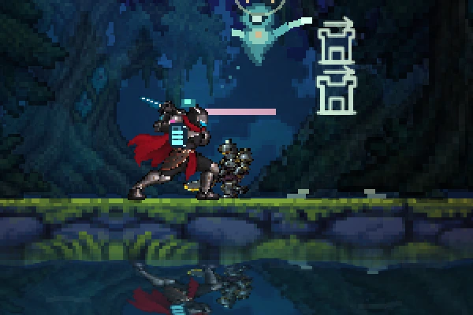
龍晶就是你的生存餘裕：每次有效受擊掉落最多 3 顆。空袋後，下一擊會掉劍；再受擊就死亡。掉劍後不能攻擊，可以回頭靠近拾回。
一般小怪會撿附近的一顆龍晶，抱回原側地獄之門離開。危急時可丟晶換取逃跑時間，擊敗抱晶怪能取回龍晶；守門者與巨龍不接受賄賂。
連續點按接斜切、回挑、重劈。騎士先轉肩蓄力，蹬地轉腰揮劍，收招時穩住重心；每刀都有完整的全身姿勢。青白刀光、命中火花與短暫停頓配合劍路，揮空不會停頓。不按方向就原地出刀，按住方向才踏斬，放開就停止推進。
攻擊與衝刺消耗體力。衝刺到力竭會強制停下喘息約兩秒，按方向也無法移動；之後先慢走，再恢復跑步。體力足夠且停下休息約兩秒，才能再次衝刺。受擊有閃光與後仰；營火受擊有方向警示與音效。
CHOOSE YOUR EDGE
騎士不再購買等級升級。探索取得新部件時會立即裝上，並替換原本的部件；已取得的舊部件仍可換回。
營火旁的部件工坊在取得部件後才可互動。按 F 或點齒輪選配；每次換成另一個已取得部件消耗 8 顆龍晶。
按 K 或雙指向上滑使用部件。依種類消耗體力，所有部件共用冷卻，換裝不會重置；光環亮起表示冷卻完成。
沒有劍時不能攻擊，拔劍點火是你的第一步。
EXPLORE / RECOVER / DEFEND
新旅程的微光林地西方藏著戰馬遺跡。沿地上的纜線找兩座導流器，按 E／手機下滑轉動指針，對準各自的發光接點。機關沒有倒數，轉錯可以重試，進度會保存。
能量接通後，在遺跡互動取回核心。回營地西側的馬廄投入 6 顆龍晶，即可騎乘；靠近馬廄再次互動可免費上下馬。戰馬移動快 25%，體力與晶袋規則不變，也能帶往其他星球。掉劍會被迫下馬，取回劍後可回馬廄再騎。
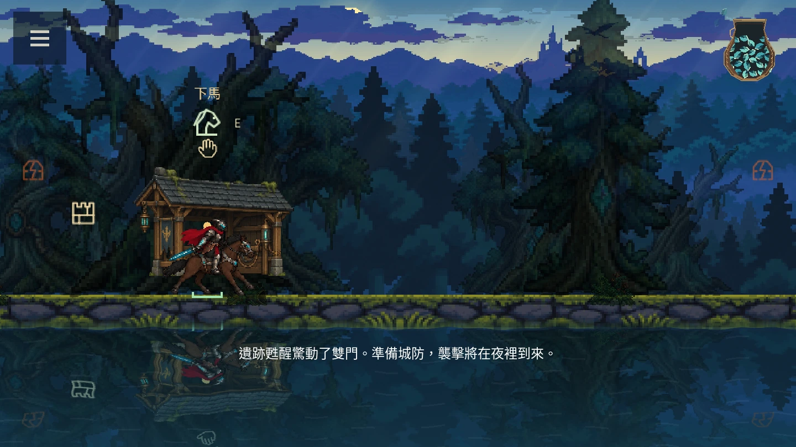
修復馬廄會驚動雙門：先出現橘色警訊，至少準備 70 秒後，下一個夜晚才額外來襲 6 隻魔物，仍由地圖兩端入侵。襲擊後下一晚少 4 隻、至少仍有 1 隻，趁空檔修牆、補器具，再出發。每趟森林旅程只觸發一次。
STAR RELICS / 08
新旅程共有八件可收藏的主動部件。森林有兩件，其餘六地各一件；探索機關、解開封印後靠近領取，第一次免費裝上。新發現會替換身上部件，舊件留在本趟旅程的收藏中。
震退附近敵人，適合被小怪包圍時脫身。
朝面向方向射出能量，適合集中打擊前方敵人。
吸回 200 距離內最多五顆現有龍晶。滿袋無法啟動；不搶居民／怪物持有的晶，也不拉剛丟出的供品。15 體力，冷卻 16 秒。
前方最多三敵受 12 傷害，普通敵移速降低 35% 四秒。巨龍只減速 10% 兩秒，出招時間不變。25 體力，冷卻 16 秒。
聚攏前方最多四隻小怪，各造成 10 傷害；不拉動守門者、巨龍，也不穿城牆。30 體力，冷卻 18 秒。
附近兩名工匠的施工速度提高 50%，持續四秒。只加速已付款的城牆、塔、拓荒站或火箭；不增加採集收益，危險時仍避難。25 體力，冷卻 24 秒。
附近最多三名弓兵，下一箭各多 8 傷害，四秒後失效。不會強迫立刻射箭，沒有弓兵不收費。20 體力，冷卻 14 秒。
體力低於 70 才可發動，三秒逐漸額外補回 30 體力。不能跳過喘息、慢行或再次衝刺的休息條件。冷卻 30 秒。
只裝一件，決定這次出門的任務：清群、拖慢追兵、救回龍晶，或帶居民守城施工。取得首件、四件與全部八件時會短暫顯示收藏里程碑；它們不增加貨幣或永久能力。
在營火旁工坊按 F／點齒輪，查看用途、收藏與來源星球線索；花八晶換回已收藏的部件。K／雙指上滑使用，共用冷卻會隨存檔與旅行保留，進行中的充能不會重新開始。
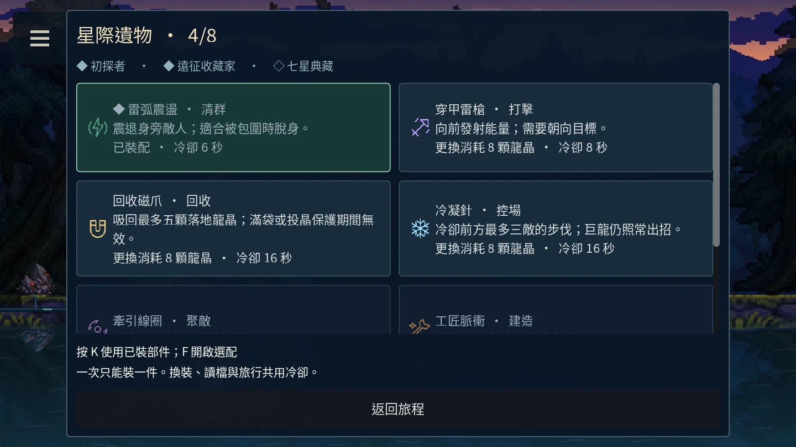
新增星球部件與收藏配置從新旅程開始。舊紀錄保留原本兩件配置與已完成的探索，不會重新鎖住遺跡。符石謎題仍是現有的符序與限時中繼，更多謎題類型將另行設計。
夜間不會全面停工：工匠與農夫附近有魔物才避難，獵人會射箭反擊，槍盾兵守住兩側。居民也會保管地面龍晶，騎士靠近時交出。
營火升到二級花 5 晶，三級再花 7 晶。二級自動搭起農具製造所；三級開放槍盾器具。設施出現不等於有器具，仍要付費製造，讓無職居民領取。


每階花費 3／5／8 龍晶，需相應聚落等級。箭塔自動射箭，連弩塔射得更快，雷射塔傷害更高。付滿後由工匠施工；建造或升級期間不會攻擊。


建造與升階花費 3／4／7 龍晶，耐久逐級提高；受損先花 2 晶修復，堡壘需要三級聚落。完整城牆會阻擋怪物及擊退位移；抱晶怪若退路被牆擋住，會先破牆再回門。付滿進入施工後或城牆被打壞時，敵人才能通過。
工匠清掉樹木或礦產後，土地可用來建城牆、守護塔或農地；農地須避難所二級才開放。用途隨地圖種子決定，讀檔不會重抽。走近投入龍晶，再由工匠建造。
07 / CLOSE THE RIFTS
七地首晚魔物依序為 3／5／6／7／8／9／10 隻，每晚再加 2 隻，單晚最多 60 隻，同時在場最多 12 隻。新星日數從第一天開始，離開的星球暫停；封門取消該側後續增援。

熬過至少一晚，並有工匠。
到裂隙委託封印，護送工匠。
處理守門者，在旁保護施工。
封住雙門會召喚巨龍；擊敗它，再清除殘敵。
新旅程的巨龍以第 6 天為基準，第 7 天起增加強度，到第 14 天封頂，召喚時鎖定；之後可安心探索，不會無限追漲。舊紀錄保留原設定。七龍都有不同預警與反擊空檔，完成的城牆可攔住攻勢。
每顆星球封印雙門、擊敗巨龍並清除殘敵後，營火西側會出現龍核。七顆龍核全部領取，才完成這次遠征。
騎士倒下，或營火核心生命歸零，這一局就會結束。你可以重新挑戰或換一張地圖。
REST / 明天再出發
遊戲會定期自動存檔，暫停或切到背景時也會保存。重新開啟後，在起始頁選擇紀錄，再按播放繼續。
想保留一個自己選定的時間點，可在暫停選單建立手動檢查點。它與自動存檔分開；在本局選單讀取可回到手動保存的當下。若從起始頁選這個檢查點，會另存成新旅程。

08 / SEVEN DRAGON WORLDS
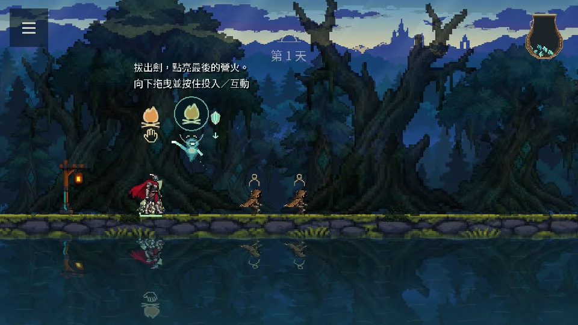
森林與晶谷。焰龍鎖定前方噴息，離開預警後靠近反擊。
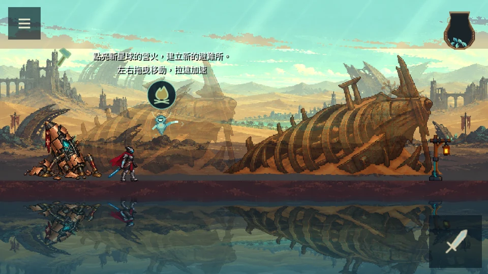
礦脈與古艦殘骸。沙龍標記地裂，離開落點再進攻。
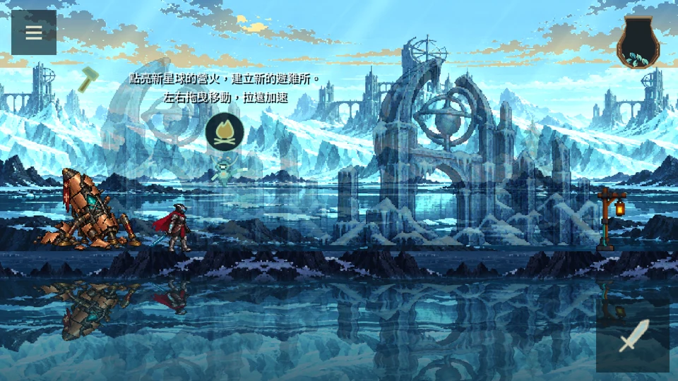
冰岸與失落觀測所。雙首冰龍依序吐息兩次，別只閃第一段。
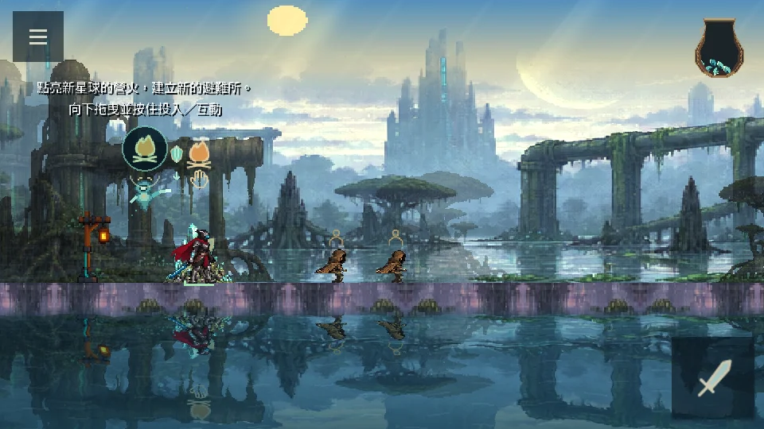
菌林、盤根水廠與孢子。孢翼龍三段落點前後交錯，走位後別急著折返。
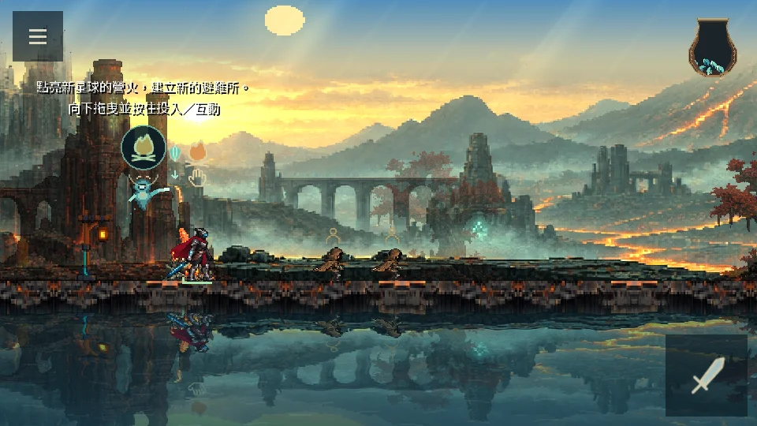
玄武岩、冷卻塔與密集晶礦。爐甲龍炮擊兩次再近身重踏，排熱期間適合反擊。
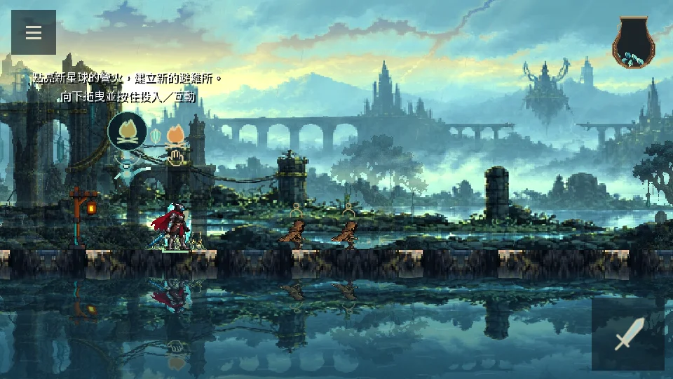
電塔、斷橋與垂落纜線。雷龍三道狹窄雷圈逐次前移，留意空隙。
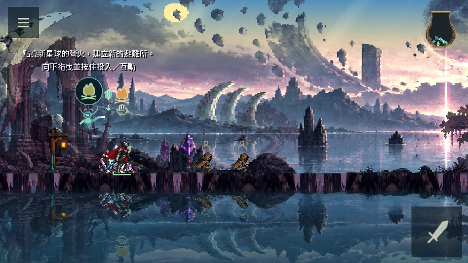
龍骨拱與破碎星環。空相龍移位後在原標記重播斬波，別跟著衝進舊落點。
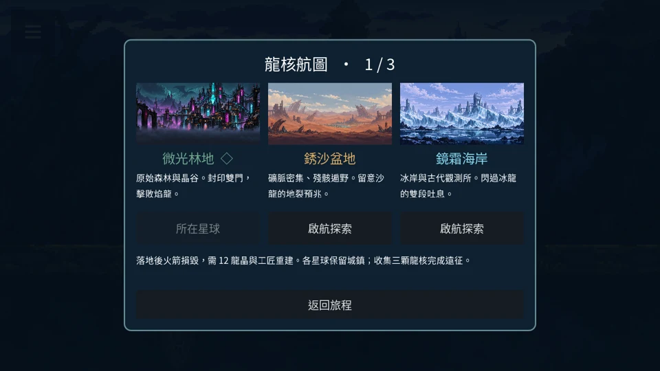
航線從微光林地分成兩支：銹沙盆地 → 孢潮沼澤；鏡霜海岸 → 熔脊裂谷。取得沼澤與熔谷龍核後開啟雷纜廢都，再通往黯潮墓環。每條箭頭表示必須先取得來源星球的龍核。
暫停選單點龍圖示可隨時查看星宇航線。點選星球先看地貌、龍與解鎖原因；金色箭頭是目前位置，菱形表示已解放。
首次在營火西側領取龍核，再投入 20 龍晶建造火箭；最多兩名工匠完成 30 工秒施工。靠近完工火箭按 E／手機下滑，選星球後再按啟航。場上有敵人或沒有劍時不能出發。
每次落地留下火箭殘骸，需 12 龍晶與工匠重建。未擊敗當地龍也可返回已到訪星球，但不能越過鎖住的航線。居民、建築、日數與採集留在各星；晶袋、劍、部件與剩餘冷卻跟著騎士，不重領商人贈禮。
FIELD NOTES / 出發前的小提醒
靠近物件後，看發光、龍晶空格與限制圖示。營火代表需要聚落升級，錘子代表施工，人物代表器具等待領取，打勾代表已完成。未完成的付款會退回地面。
居民要先領取你付費製造的錘子成為工匠，再到工作範圍內的資源點付一晶委託。太遠、尚未探索或附近有敵人，都可能讓工作無法開始；騎士揮劍不能代替採集。
袋子滿了，再收取的龍晶會落水。居民也會撿起龍晶保管，騎士靠近才會獻出；剛丟出的晶體有短暫拾取等待。
未持劍或體力不足時不能出刀。衝刺耗盡先強制喘息，再逐步恢復走路與跑步；之後還要停下休息，才能再次衝刺。電腦快跑用同方向連按兩次並按住第二下，不用 Shift。
清地能換取龍晶與擴建位置，但保留森林能維持招募營地和獵物再生。先選定你想推進的方向，不必把每片森林都清光。
可以。七顆星球都有可探索地圖、雙門、巨龍和龍核。航線依前置龍核解鎖，舊三地紀錄可繼續探索新增四地。
適用 v0.0.23：七星球遠征新增八件用途各異的部件、收藏里程碑與來源線索，並保留森林戰馬與預警襲擊。新增星球部件請開新旅程體驗；舊紀錄保留原兩件配置，可繼續遊玩。更多坐騎、武器與各地專屬謎題仍待後續開發。